자기비파괴검사기사(구) (2012-08-26 기출문제)
1과목: 자기탐상시험원리
1. 그림과 같이 반지름 a[cm]의 원통형 도체에 직선 전류[i]를 흘렸을 때 도체 표면에서의 자장의 세기 [H]는?
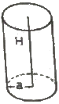
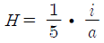
- H=5ai
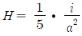
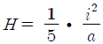
(정답률: 알수없음)

2. 직류회로에서 전류를 I, 전압을 E, 저항을 R 이라 할 때 상호 관계식으로 알맞은 것은?
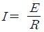
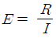
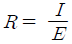
- I=ER2
(정답률: 알수없음)
3. 자분탐상시험법중에서 습식법의 장점이 아닌 것은?
- 아주 미세한 표면 균열에 대하여 가장 감도가 높은 방법이다.
- 소형 부품을 대량으로 신속하게 탐상할 수 있는 방법이다.
- 표면 밑에 존재하는 불연속을 용이하게 검출할 수 있다.
- 자분 입자의 유동성이 좋다.
(정답률: 알수없음)
4. 30[Oe]에서 자분모양이 나타나는 A형 표준시험편을 사용하여 시험체에 36[Oe]의 자계의 세기를 걸어 주었을 때의 자화전류치[A]는 얼마인가? (단, A형 표준시험편을 시험체에 부착하고 자화전류를 증가시켰을 때 자분모양이 나타난 자화전류치는 5A 이다.)
- 2
- 4
- 6
- 8
(정답률: 알수없음)
5. 다음 중 일반적으로 최종적인 자분탐상시험의 시기는 언제가 적당한가?
- 최종 가공이 완료되기 전으로써, 최종 열처리가 실시된 후에
- 최종 가공이 완료된 후로써, 최종 열처리가 실시되기 전에
- 최종 가공 및 열처리가 완료된 후에
- 최종 열처리의 실시 전으로서 아무 때나
(정답률: 알수없음)
6. 자화방법 선택시 고려 사항을 열거한 것으로 틀린것은?
- 예측되는 방향에 대하여 자계의 방향이 직각이 되는 자화방법을 선택한다.
- 자계의 방향을 시험면에 가급적 평형이 되도록 한다.
- 잔류법에 의한 시험의 경우는 교류자화를 하여야한다.
- 대형시험체는 분할하여 국부적으로 자화시킬 수 있는 자화방법을 선택한다.
(정답률: 알수없음)
7. 비파괴시험의 종류별 특성이 틀리게 짝지어진 것은?
- 방사선투과시험 - X선, ϓ의 발생
- 초음파탐상시험 - 미세 균열에 감도 높음
- 자분탐상시험 - 교번자장에 의한 자분 흡착
- 침투탐상시험 - 액체의 적심성 영향
(정답률: 알수없음)
8. 일반적으로 매 검사마다 소모성 재료비가 가장 많이 소요되는 비파괴검사는?
- X선투과시험
- 와전류탐상시험
- 초음파탐상시험
- X선투시영상시험
(정답률: 알수없음)
9. 초음파탐상시험시 주파수의 선정방법으로 옳은 것은?
- 초음파의 감쇠가 큰 재료에는 높은 주파수를 사용하는 것이 유리하다.
- 작은 결함의 검출에는 높은 주파수를 사용하는 것이 탐상에 유리하다.
- 초음파 빔의 진행거리가 긴 시험체에서는 높은 주파수를 사용하는 것이 유리하다.
- 초음파 빔의 방향에 인접해 있는 두 결함의 검출에는 낮은 주파수를 사용하는 것이 유리하다.
(정답률: 알수없음)
10. 방사선을 이용한 비파괴검사 응용 중의 하나로 시험체의 조성 검토에 사용되는 검사법은?
- 방사선 두께 측정법
- 중성자투과검사법
- 양전자 쌍 소멸법
- 미시방사선투과검사법
(정답률: 알수없음)
11. 염색침투검사법이 형광침투검사법에 비해 좋은 점은?
- 검출감도가 좋다.
- 표면이 검은 시험체에 좋다.
- 어두운 곳에서도 검사가 가능하다.
- 현장에서 간편하게 이용할 수 있다.
(정답률: 알수없음)
12. 비파괴검사를 이상적으로 수행하기 위한 전제 조건이 아닌 것은?
- 제작품에 대한 납기를 고려할 것
- 제작에 의해 발생하는 결함의 상황을 알 것
- 피검사장소가 비파괴검사를 적용하는 것이 가능할 것
- 결함이 제품에 미치는 영향에 대한 지식을 보유할 것
(정답률: 알수없음)
13. 할로겐누설시험에서 가열양극 할로겐법의 장점을 설명한 것으로 틀린 것은?
- 사용이 간편하고 능률적이다.
- 할로겐 추적가스에만 응답한다.
- 기름에 막혀 있는 누설도 검출할 수 있다.
- 진공상태에서도 일반적인 검출기를 이용하여 시험 할 수 있다.
(정답률: 알수없음)
14. 침투탐상검사의 적용에 관한 설명으로 옳은 것은?
- 다공성 재료나 흡수성 재료 탐상에 적합하다.
- 사용 중인 제품의 표면 피로균열의 검출이 어렵다.
- 자성체의 표면결함을 검출할 경우 자분탐상검사보다 신뢰성이 높다.
- 시험체에 존재하는 표면 불연속의 검출력은 방사선 투과 검사보다 높다.
(정답률: 알수없음)
15. 와전류탐상시험으로 탐상하기 가장 어려운 것은?
- 관의 외경 변화
- 관의 표면 균열
- 후판 내부 결함의 자동화검사
- 봉의 랩(lap) 및 심(seam) 검출
(정답률: 알수없음)
16. 자분탐상검사의 검사액(자분현탁액)에 물을 쓰는 주된 이유는?
- 시험체 표면에서 유동성이 좋기 때문이다.
- 기름에 비하여 인화성이 없기 때문이다.
- 기름에 비하여 값이 싸기 때문이다.
- 시험이 끝난 후 시험체로부터 닦아내기 용이하기 때문이다.
(정답률: 알수없음)
17. 결함의 생성 중에서 검출이 용이하지만 결함의 생성이 정지된 상태에서는 검출이 어려운 비파괴검사법은?
- 초음파탐상시험
- 방사선투과시험
- 와전류탐상시험
- 음향방출시험
(정답률: 알수없음)
18. 와전류탐상시험의 특징을 설명한 것 중 틀린 것은?
- 시험의 후처리가 필요없다.
- 고온 부위의 시험체에 탐상이 가능하다.
- 시험체에 비접촉으로 탐상이 가능하다.
- 복잡한 형상을 갖는 시험체의 전면 탐상에 능률적이다.
(정답률: 알수없음)
19. 침투탐상검사에서 침투에 영향을 미치는 요인을 설명한 것 중 옳은 것은?
- 접촉각 θ가 0° 이면 이상적인 적심성을 갖는다.
- 점성이 낮은 침투액은 점성이 높은 침투액에 비하여 침투속도가 느리다.
- 제한된 범위에서 표면장력이 작을수록 모세관 속에 액체가 높이 올라간다.
- 액체가 모세관 벽을 적시게 되면 모세관 속 액체의 요철면은 오목면이 되고 액체가 상승한다.
(정답률: 알수없음)
20. 내압시험은 고압가스용기와 보일러 등의 내압용기가 사용 중의 압력에 잘 견디는지의 여부를 알기 위한 시험이다. 그렇다면 시험압력은 최고사용압력(설계압력)의 몇 배까지 가압하여야 하는가?
- 0.5 ~ 1.2
- 1.25 ~ 1.5
- 2.0 ~ 3.0
- 3.0 ~ 4.0
(정답률: 알수없음)
2과목: 자기탐상검사
21. 자분탐상검사에서 축통전법(direct contract technique)을 적용하는 경우 시험면에서의 자계의 세기(H)를 구하는 공식으로 다음 중 맞는 것은? (단, 시험편의 반지름을 r(m), 자화전류의 세기를 I(A), 시험체의 전기저항을 R(Ω) 이라고 한다.)
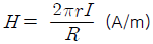
- H=0.5πγIR (A/m)
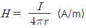
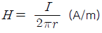
(정답률: 알수없음)
22. 형광 습식자분탐상 검사액의 성능 점검 항목으로 가장 거리가 먼 것은?
- 불순물의 혼입량
- 검사액 중의 자분 분산농도
- 색채, 형광휘도
- 1000Lx 이상의 가시광 조도
(정답률: 알수없음)
23. 다음 중 홀효과(Hall effect)의 설명으로 틀린 것은?
- 얇은 철판으로 실험할 수 있다.
- 전류의 흐름과 자계의 흐름이 직각일 때 발생한다.
- 자계와 전압의 관계에서 발생한다.
- 자계의 방향과 세기를 측정할 수 있다.
(정답률: 알수없음)
24. 자분탐상검사 후 시험체를 탈자해야 하는 경우 전류를 조금씩 감쇠시키는 이유로 가장 적합한 것은?
- 탈자가 시험체 표면에 국한되지 않게 하기 위해
- 자기이력곡선의 변화가 일어나지 않게 하기 위해
- 전류변화량이 크면 부분적으로 탈자가 누락되기 때문에
- 매번 자기이력곡선의 폐회로가 충분히 이루어지도록 해야 하기 때문에
(정답률: 알수없음)
25. 다음 중 습식자분의 분산농도를 측정하는 기기는?
- 하이드로메타
- 침전관
- 피펫시험관
- 블랙라이트
(정답률: 알수없음)
26. 자분탐상검사에 사용되는 자기 계측기로서 홀 소자(Hall element)라 부르는 감자성 반도체(Ge, In-Sb등)로 만들어진 작고 얇은 평판 모양의 자기 검출기를 이용하여 국부적인 공간의 자계나 누설 자속밀도를 측정하는 것으로써 공간의 교류와 직류의 자계를 측정할 수 있는 것은?
- 자속계(Flux meter)
- 가우스 미터(Gauss meter)
- 에르스테드 미터(Oersted meter)
- 교류 자계 자속계
(정답률: 알수없음)
27. 습식자분탐상검사에서 계면 활성제가 첨가된 물분산매를 사용할 경우 성질에 관한 설명으로 틀린 것은?
- 표면을 균일하게 적실 수 있도록 적심성이 좋아야 한다.
- 자분의 응집이 없이 자분이 전체적으로 분산될 수 있도록 분산성이 좋아야 한다.
- 자분의 분산성이 좋고, 적심성을 좋게 하기 위하여 거품형성이 잘 되어야 한다.
- 사용하는 장치나 검사품을 부식시키지 않아야 한다.
(정답률: 알수없음)
28. 습식자분 사용시 그 특징으로 틀린 것은?
- 건식자분보다 재사용성이 좋다.
- 검사 후 후속공정에 잔류자분으로 인한 제거성이 나쁘다.
- 미세한 표면균열 검사에 좋다.
- 자분액의 농도로 인한 유동성이 나쁘다.
(정답률: 알수없음)
29. 프로드법에서 높은 자속밀도가 전극부위에 방사상으로 형성되는 자분모양을 무엇이라고 하는가?
- 전극지시
- 재질경계지시
- 단면급변지시
- 단류선에 의한 지시
(정답률: 알수없음)
30. 자분모양 중 잔류법을 적용한 시험품이 서로 접촉한 경우 나타나는 지시는?
- 자기펜 흔적
- 단면 급변지시
- 자극지시
- 전극지시
(정답률: 알수없음)
31. 다음 중 자기펜 흔적의 의사모양 발생에 대하여 잘못 설명한 것은?
- 잔류법을 적용할 때 시험체끼리 접촉되지 않도록 주의하여야 한다.
- 일반적으로 희미하고 굵은 모양의 지시를 나타낸다.
- 탈자 후 재자화시키면 없어진다.
- 예리한 것으로 접촉하면 자분모양이 뚜렷한 선모양으로 나타나 결함으로 잘못 판독하기 쉽다.
(정답률: 알수없음)
32. 다음 중 자화고무법(Magnetic Rubber Inspection)의 특성이 아닌 것은?
- 코일법 및 프로드법으로도 적용할 수 있다.
- 관찰할 때 직접 접근이 어려운 부위에도 검사가 가능하다.
- 검사시간이 많이 소요되나 검사결과를 다시 확인할 수 있다.
- 시험면이 코팅(Coating)된 경우에는 검사가 어려워 진다.
(정답률: 알수없음)
33. 비형광자분을 사용하여 자분탐상검사시 시험면에서 조도는 일반적으로 얼마 이상이어야 하는가?
- 50 lx
- 100 lx
- 300 lx
- 500 lx
(정답률: 알수없음)
34. 다음 중 교류자화의 장점으로 틀린 것은?
- 표면결함 검출 우수
- 탈자 용이
- 잔류법의 적용에 우수
- 반자장의 영향이 적음
(정답률: 알수없음)
35. 자분탐상검사에 사용되고 있는 방법 중 발생하는 자계의 방향성에 따라 분류한 검사방법은?
- 건식법
- 형광법
- 선형자화법
- 직류법
(정답률: 알수없음)
36. 자분탐상검사를 적용했을 때 효과적이지 못한 것은?
- 차량의 크랭크축
- 석유저장탱크의 용접부
- 항공기용 터빈블레이드
- 완충 스프링
(정답률: 알수없음)
37. 형광자분탐상시험시 사용되는 자외선등의 가장 이상적인 파장은?
- 3⑤nm
- 365nm
- 425nm
- 510nm
(정답률: 알수없음)
38. 습식자분에 사용되는 강자성체 분말의 크기로 적합한 것은?
- 0.01 ~ 0.1㎛
- 0.2 ~ 60㎛
- 70 ~ 90㎛
- 100 ~ 600㎛
(정답률: 알수없음)
39. 비형광 자분탐상검사 결과, 검출된 자분모양에서 반사되는 빛의 반사량은 입사광량의 어느 정도가 되는 가?
- 약 5%
- 약 10%
- 약 30%
- 약 50%
(정답률: 알수없음)
40. 자분탐상시험에서 자화 전류와 자분의 종류에 따라 분류한 시험방법 중 깊은 결함에 대하여 감도가 좋은 순서대로 나열된 것은?
- 교류습식 - 직류건식 - 반파정류건식
- 직류건식 - 교류습식 - 반파정류건식
- 반파정류건식 - 교류습식 - 직류건식
- 직류건식 - 반파정류건식 - 교류습식
(정답률: 알수없음)
3과목: 자기탐상관련규격및컴퓨터활용
41. 보일러 및 압력용기에 대한 자분탐상검사(ASME Sec.V. Art.7)에서의 프로드(Prod)법에 대한 설명으로 틀린 것은?
- 시험체에 직접 자화전류를 보낸다.
- 부품, 구조물의 부분탐상을 위하여 선형자계를 형성할 때 사용한다.
- 전극인 동봉의 굵기는 자화전류의 크기에 따라 정할 필요가 있다.
- 프로드법은 전기적 스파크를 방지하기 위한 특별한 조치가 필요하다.
(정답률: 알수없음)
42. 철강 재료의 자분탐상 시험방법 및 자분모양의 분류(KS D 0213)에 따라 자화전류를 선택할 때 고려해야 하는 항목으로 옳은 것은?
- 충격 전류를 사용하여 자화하는 경우는 연속법에 한한다.
- 직류에 의한 자화는 표피효과 때문에 교류보다 약하다.
- 교류를 사용하여 자화하는 경우는 원칙적으로 잔류 법에 한한다.
- 직류 및 맥류를 사용하여 자화하는 경우는 연속법 및 잔류법을 사용할 수 있다.
(정답률: 알수없음)
43. 보일러 및 압력용기에 대한 표준자분탐상검사(ASME Sec.V. Art.25 SE-709)에서 비형광자분 검사 액의 조정수(conditioned water)의 알칼리성은 pH 측정기로 측정하였을 때 어느 범위(pH) 이어야 하는가?
- 1.0 ~ 3.5
- 3.5 ~ 6.0
- 6.0 ~ 10.5
- 11.0 ~ 13.0
(정답률: 알수없음)
44. 보일러 및 압력용기에 대한 표준자분탐상검사(ASME Sec.V. Art.25 SE-709)에서 규정한 전류계의 정밀도에 대한 최대 교정주기로 옳은 것은?
- 6개월마다 1회 이상
- 1년마다 1회 이상
- 2년마다 1회 이상
- 5년마다 1회 이상
(정답률: 알수없음)
45. 보일러 및 압력용기에 대한 자분탐상검사의 합격기준(ASME Sec.Ⅷ Div.1, App.6)에 따라 검출된 관련자분모양이 길이 9mm, 폭 3mm 일 때 자분모양의 평가는?
- 선형지시
- 원형지시
- 타원형지시
- 선형 또는 원형지시
(정답률: 알수없음)
46. 보일러 및 압력용기에 대한 자분탐상검사(ASME Sec.V. Art.7)에 따른 자화 장치의 교정주기와 장치 계기의 허용 오차 범위를 옳게 나타낸 것은?
- 교정 주기 : 2년, 허용 오차 : ±5%
- 교정 주기 : 1년, 허용 오차 : ±10%
- 교정 주기 : 1년, 허용 오차 : ±15%
- 교정 주기 : 2년, 허용 오차 : ±15%
(정답률: 알수없음)
47. 다음 중 탈자 후 재시험하면 없어지는 유사지시는?
- 재질 경계지시
- 단면 급변지시
- 오염지시
- 자기펜 흔적
(정답률: 알수없음)
48. 보일러 및 압력용기에 대한 표준자분탐상검사(ASME Sec.V. Art.25 SE-709)의 검사장비 점검 권고 기간을 나타낸 것으로 틀린 것은?
- 조도계 점검 : 6개월
- 습식자분의 농도 : 1주
- 시험편을 사용한 시스템 성능 : 1일
- 가시광선 및 자외선조사등의 조명 : 1주
(정답률: 알수없음)
49. 철강 재료의 자분탐상 시험방법 및 자분모양의 분류(KS D 0213)에 따라 자화를 시킬 때 고려할 사항중 잘못된 것은?
- 자계의 방향을 예측되는 홈의 방향에 대하여 가능한 한 직각으로 한다.
- 자계의 방향을 시험면에 가능한 한 평행으로 한다.
- 반자계는 가능한 한 크게 한다.
- 시험면을 태워서는 안 될 경우는 시험체에 직접 통전하지 않는 방법을 선택한다.
(정답률: 알수없음)
50. 철강 재료의 자분탐상 시험방법 및 자분모양의 분류(KS D 0213)의 장치 기록 사항이다. ( ) 안에 올바른 것은 어느 것인가?
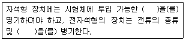
- 평균 자속, 파형
- 최대 자속, 주파수
- 잔류 자속, 주파수
- 최대 전류, 파형
(정답률: 알수없음)
51. 철강 재료의 자분탐상 시험방법 및 자분모양의 분류(KS D 0213)의 B형 대비시험편에 대한 설명으로 옳은 것은?
- 잔류법으로 사용한다.
- 인공 홈의 치수는 깊이 8mm, 나비 20mm로 한다.
- 장치, 자분 및 검사액의 성능 조사에 사용한다.
- 시험편의 직경은 10, 50, 100, 150, 200mm가 있다.
(정답률: 알수없음)
52. 보일러 및 압력용기에 대한 자분탐상검사(ASME Sec. V. Art 7)에 의거 그림과 같은 환봉을 코일법으로 검사하고자 할 때 필요한 자회전류[A]는? (단, 권선수는 4회로 한다.)
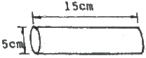
- 2250
- 3750
- 4250
- 4750
(정답률: 알수없음)
53. 철강 재료의 자분탐상 시험방법 및 자분모양의 분류(KS D 0213)에 따른 동일 직선상에 길이 10mm, 나비 2mm인 지시(A)와 길이 8mm, 나비 3mm인 지시 (B)가 3mm 간격으로 검출되었을 때 설명으로 옳은 것은?
- 지시 A는 선상, 지시 B는 원형상의 자분모양이며, 길이는 각각 10mm와 8mm이다.
- 지시 A와 B는 모두 선상의 자분모양이며, 길이는 각각 10mm와 8mm이다.
- 지시 A와 B는 1개의 선상의 자분모양으로 간주되며, 길이는 18mm이다.
- 지시 A와 B는 1개의 선생의 자분모양으로 간주되며, 길이는 21mm이다.
(정답률: 알수없음)
54. 보일러 및 압력용기에 대한 표준자분탐상검사(ASME Sec.V. Art.25 SE-709)에서 전파직류(FWDC)를 사용한 전류관통법으로 외격 2인치의 속이 빈 관을 자화하기 위해 필요한 자화전류 범위로 옳은 것은?
- 100 ~ 125[A]
- 300 ~ 500[A]
- 600 ~ 1600[A]
- 2000 ~ 4000[A]
(정답률: 알수없음)
55. 철강 재료의 자분탐상 시험방법 및 자분모양의 분류(KS D 0213)에서 검사액 속의 자분 분산 농도에 대한 설명으로 틀린 것은?
- 분산 농도는 검사액의 단위 용적(ℓ) 중에 포함하는 자분의 무게(g)로 나타낸다.
- 분산 농도는 검사액의 단위 용적(100mℓ) 중에 포함되는 자분의 침전 용적(mℓ)으로 나타낸다.
- 비형광 자분의 분산 농도는 자분의 종류 및 입도를 고려하여 설정한다.
- 형광 자분의 분산농도는 자분의 색조와 휘도를 고려하여 설정한다.
(정답률: 알수없음)
56. 보일러 및 압력용기에 대한 자분탐상검사의 합격기준(ASME Sec.Ⅷ Div.1 App.6)에 따라 지시를 평가할 경우 의심스러운 지시에 대한 올바른 조치는?
- 관련지시 여부를 결정하기 위해 재시험한다.
- 선상지시 또는 원형지시로 분류한다.
- 지시의 위치 및 크기를 기록한다.
- 의사지시로 평가하고 다음 검사를 진행한다.
(정답률: 알수없음)
57. 보일러 및 압력용기에 대한 자분탐상검사(ASME Sec.V. Art.7)에 따라 검사 절차서를 작성할 때 다음중 필수 변수에 포함하지 않아도 되는 것은?
- 자화방법
- 표면준비
- 검사자의 자격인정 요건
- 인정한 범위를 초과하는 피복두께
(정답률: 알수없음)
58. 보일러 및 압력용기에 대한 자분탐상검사의 합격기준(ASME Sec.Ⅷ Div.1 App.6)에 의해 크기가 2mm 인 원형지시 4개가 일렬로 배열되어 검출되었을 때 불합격으로 판정할 수 있는 최대 결함사이 간격의 합은?
- 1/8인치
- 3/16인치
- 1/4인치
- 5/16인치
(정답률: 알수없음)
59. 철강 재료의 자분탐상 시험방법 및 자분모양의 분류(KS D 0213)에서 시험체의 재질, 표면 상황 및 홈의 성질에 따른 자분의 적당한 조건은?
- 입도, 분산성, 현탁성, 색조
- 자성, 점성, 투자율, 색조
- 입도, 분산성, 자속밀도, 투자율
- 자성, 질량, 분산성, 현탁성
(정답률: 알수없음)
60. 철강 재료의 자분탐상 시험방법 및 자분모양의 분류(KS D 0213)에 따라 자회전류로 직류를 사용했을 때 자분모양이 표면의 홈 또는 표면근처 내부 홈에 의한 것인지를 구별하기 위한 조치로 올바른 것은?
- 적용한 전류치보다 더 높은 직류전류로 재시험한다.
- 충격전류를 사용하여 연속법으로 재시험한다.
- 교류로 재시험한다.
- 탈자한 후 자분분산매를 적용한다.
(정답률: 알수없음)
4과목: 금속재료학
61. 공구강이 구비해야할 조건을 설명한 것 중 틀린것은?
- 피삭성이 좋아야 한다.
- 열처리 변형이 적어야 한다.
- 인성이 커서 충격에 잘 견디어야 한다.
- 고온경도가 낮고, 마모성이 커야한다.
(정답률: 알수없음)
62. 침탄처리 후 1차 및 2차 담금질을 실시한다. 이때 1차 담금질하는 목적으로 옳은 것은?
- 표면층을 미세화하기 위하여
- 중심부 조직을 미세화하기 위하여
- 변형을 줄이고 깊은 침탄층을 얻기 위하여
- 중심부와 표면층의 높은 강도와 경도를 얻기 위하여
(정답률: 알수없음)
63. 비철 합금 주물의 편석 현상 중 주물 각부의 온도차 때문에 생기는 편석 현상은?
- 정편석(正偏析)
- 열편석(熱偏析)
- 중력편석(重力偏析)
- 역편석(逆偏析)
(정답률: 알수없음)
64. 청동에 관한 설명 중 틀린 것은?
- 주석청동의 α고용체는 결정편석 때문에 농도가 틀려져 유심조직을 나타낸다.
- 스프링용 인청동은 7~8%Sn, 0.⑤~0.15%P 정도의 합금이 실용화되고 있다.
- 인청동을 용해 주조할 때 합금 중에 인을 0.⑤~0.15%P 남게 하면 용탕의 유동성이 향상된다.
- 니켈청동에서 δ상이 석출하는 과정에 연화하는 현상이 나타난다.
(정답률: 알수없음)
65. Ti 합금의 기본이 되는 합금형이 아닌 것은?
- α형
- β형
- η형
- (α+β)형
(정답률: 알수없음)
66. 탄소강에서 Mn의 영향이 아닌 것은?
- 경화능을 크게 한다.
- 고온에서 결정립의 성장을 억제한다.
- 편석을 일으키고 상온 취성의 원인이 된다.
- 강의 점성을 증가시키고 고온 가공을 쉽게 한다.
(정답률: 알수없음)
67. Cu-Pb 계로 고속, 고하중에 적합한 베어링용 합금의 명칭은?
- 켈멧(Kelmet)
- 크로멜(Chromel)
- 슈퍼인바(Superinvar)
- 백 메탈(Back metal)
(정답률: 알수없음)
68. Cr계 스테인리스강에서 42~48%Cr 범위에 금속간 화합물의 석출로 인하여 재료가 취화하는 현상은?
- σ 취성
- 고온취성
- 저온취성
- 475℃ 취성
(정답률: 알수없음)
69. 스텔라이트(stellite)의 합금 조성으로 옳은 것은?
- WC-Co계 합금
- Co-Cr-W-C계 합금
- W-C-Nb-Mn계 합금
- Ti-Mo-W-Pb계 합금
(정답률: 알수없음)
70. 2원계 합금 중에서 대표적인 초소성(super plastic) 합금은?
- Zn - 22% Al 합금
- W - 22% Zn 합금
- Ag - 22% S 합금
- Cu - 22% Ti 합금
(정답률: 알수없음)
71. 소성변형의 가공방법을 설명한 것 중 틀린 것은?
- 압연가공 : 회전하는 Roll 사이에 소재를 통과시켜 성형
- 인발가공 : 괴상의 소재를 고온에서 가압하여 성형
- 프레스가공 : 판재를 펀치와 다이 사이에 압축하여 성형
- 압출가공 : 다이를 통하여 금속을 밀어내어 균일한 단면을 갖는 제품을 성형
(정답률: 알수없음)
72. 표점거리 100mm인 인장시험편의 연신율이 30% 였을 때 늘어난 길이는 몇 mm인가?
- 10
- 20
- 30
- 40
(정답률: 알수없음)
73. 용융점이 높아 용해가 곤란하여 주로 분말 야금법으로 성형하는 금속으로 고속도강의 첨가 원소로도 사용되는 것은?
- W
- Ag
- Au
- Cu
(정답률: 알수없음)
74. 목적원소를 이온화하여 정전(靜電)적으로 가속해서 고체 중에 도입합으로써 표면근방(약100mm까지)이 연속적이면서 선택적으로 조성이 변화하며, 반도체의 실리콘 도핑 등에 이용되는 표면개질처리는?
- 스퍼터(Sputter)법
- 이온플레이팅(Ion plating)법
- 플라즈마(Plasma) CVD법
- 이온 주입(Ion implantation)법
(정답률: 알수없음)
75. 열처리에서 질량효과(Mass effect)에 대한 설명으로 옳은 것은?
- 가열시간의 차이에 따라 재료의 내ㆍ외부가 뒤틀리는 현상이다.
- 재료의 크기에 따라 담금질 효과가 다르게 나타나는 현상이다.
- 시효처리의 일종으로서 재료가 크면 내부의 경도가 외부 경도에 비해 떨어지는 현상이다.
- 뜨임현상의 일종으로서 뜨임 시간이 길어지면 재료 내ㆍ외부에 경도가 달라지는 현상이다.
(정답률: 알수없음)
76. 2원계 상태도에서 포정 반응을 설명한 것 중 옳은 것은?
- 하나의 융체로부터 2개의 고체상이 정출되는 반응이다.
- 두 개의 융체로부터 하나의 고체상이 정출되는 반응이다.
- 하나의 결정상으로부터 두 개의 새로운 결정상이 석출하는 반응이다.
- 하나의 융체와 하나의 결정상이 반응하여 다른 결정상이 정출되는 반응이다.
(정답률: 알수없음)
77. 구상흑연 주철에 대한 설명으로 옳은 것은?
- 인장강도는 약 20kgf/mm2 이하이다.
- 주조상태에서 흑연이 구상으로 정출한다.
- 피로한도는 회주철에 비해 1.5 ~ 2.0배 낮다.
- 구상흑연주철의 기지 조직은 펄라이트만 존재한다.
(정답률: 알수없음)
78. Fe-C 평형 상태도에서 공정점의 자유도는? (단, 압력은 일정하다.)
- 0
- 1
- 2
- 3
(정답률: 알수없음)
79. 탄소강의 열처리 과정에서 용적의 변화가 가장 심한 조직은?
- 펄라이트
- 소르바이트
- 마텐자이트
- 오스테나이트
(정답률: 알수없음)
80. 마그네슘(Mg)에 관한 설명으로 틀린 것은?
- 비중이 약 1.74로 가볍다.
- 열전도도는 Cu, Al보다 낮다.
- 원료로는 보오크사이트, 헤마타이트 등이다.
- 알칼리에는 잘 견디나 산이나 염기에는 침식된다.
(정답률: 알수없음)
5과목: 용접일반
81. TIG 용접에서 직류 전원을 사용하여 용접을 할 때 나타나는 현상에 대한 설명으로 틀린 것은?
- 정극성에서 전자는 전극에서 모재쪽으로 흐른다.
- 역극성에서 용접하면 아크의 자기 제어가 나타난다.
- 정극성으로 접속하면 비드 폭이 좁고 용입이 깊어진다.
- 역극성으로 접속하면 전극 끝이 과열되어 용융되는 경향이 있다.
(정답률: 알수없음)
82. 아크 전압 30V, 아크 전류 300A, 용접속도 10cm/min로 용접시 발생하는 용접 입열은 몇 Joule/cm 인가?
- 18000
- 24000
- 36000
- 54000
(정답률: 알수없음)
83. 가스용접에서 연강용 용접봉의 설명으로 틀린 것은?
- 가능한 모재와 같은 재질이어야 한다.
- 용융온도는 모재보다 약간 낮은 것이 좋다.
- SR은 625±25℃에서 1시간 동안 응력을 제거한 것을 뜻한다.
- 인(P)의 성분은 강에 취성을 주며 가연성을 잃게 하는 원인이 된다.
(정답률: 알수없음)
84. 직류 아크 용접시 두 전극 사이의 아크 전압 분포를 나타내는 식으로 올바른 것은? (단, Va : 아크 전압, VA : 양극 전압 강하, Vk : 음극 전압 강하, Vp : 아크 기둥 전압 강하)
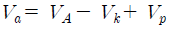
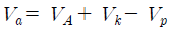
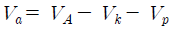
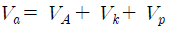
(정답률: 알수없음)
85. 연납땜과 경납땜을 구분하는 용점은?
- 350℃
- 400℃
- 450℃
- 500℃
(정답률: 알수없음)
86. 용접법의 분류에서 저항 용접에 해당하는 것은?
- 심 용접
- 테르밋 용접
- 스터드 용접
- 가스 납땜
(정답률: 알수없음)
87. 용접결함의 발생 원인 중 용접사에 의한 원인이라 볼 수 없는 것은?
- 언더컷(under cut)
- 크레이터 균열(crater crack)
- 라미네이션 균열(lamination crack)
- 아크 스트라이크(arc strike)
(정답률: 알수없음)
88. 직류 아크 용접기의 극성에서 정극성과 비교한 연극성의 설명으로 올바른 것은?
- 용접봉을 음극에 연결한다.
- 모재의 용입이 깊다.
- 용접봉의 용융속도가 빠르다.
- 비드의 폭이 좁다.
(정답률: 알수없음)
89. 용접부의 열영향으로 인한 내부균열로서 모서리 이음, T 이음 등에서 볼 수 있는 것으로 모재 표면과 평행하게 층상으로 발생하는 균열은?
- 설퍼 균열
- 루트 균열
- 토 균열
- 라미네이션 균열
(정답률: 알수없음)
90. TIG 용접에서 토치의 노즐(nozzle)을 통하여 분출되는 아르곤 가스의 속도는 약 몇 m/s 정도이어야 가장 적합한가?
- 0.5 ~ 2
- 2 ~ 3
- 5 ~ 8
- 9 ~ 10
(정답률: 알수없음)
91. 다음 중 심 용접의 통전 방법이 아닌 것은?
- 단속 통전법
- 연속 통전법
- 맥동 통전법
- 축 통전법
(정답률: 알수없음)
92. 용접 금속부의 피닝(peening)의 목적에 해당하지않는 것은?
- 잔류응력의 완화
- 용접변형의 경감
- 용접부의 연성 증가
- 용착금속의 균열 방지
(정답률: 알수없음)
93. 핫 스타트 장치(hot start)의 장점에 해당하지 않는 것은?
- 비드 모양을 개선한다.
- 기공을 방지한다.
- 아크 손실이 적어 용접이 쉽다.
- 아크 발생 초기의 용입을 양호하게 한다.
(정답률: 알수없음)
94. 연강용 가스 용접봉의 성분 중 유황(S)이 모재에 미치는 영향으로 올바른 것은?
- 강의 강도를 증가시키나 연신율, 굽힘성 등이 감소된다.
- 기공은 막을 수 있으나 강도가 떨어진다.
- 강에 취성을 주며 가연성을 잃게 한다.
- 용접부의 저항력을 감소시키고 기공의 발생이 쉽다.
(정답률: 알수없음)
95. 전류가 높고 아크 길이가 특히 긴 경우에 발생하며 용접금속의 비산에 의한 용접봉의 손실을 초래하는 결함은?
- 기공
- 오버 랩
- 용입 불량
- 스패터
(정답률: 알수없음)
96. 다음 그림에 나타난 심(seam) 용접의 종류는?
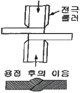
- 맞대기 심 용접(butt seam welding)
- 매시 심 용접(mash seam welding)
- 포일 심 용접(foil seam welding)
- 맥동 심 용접(pulsation seam welding)
(정답률: 알수없음)
97. 용접부에 발생하는 비틀림 변형을 줄이기 위한 시공상의 주의사항으로 잘못된 것은?
- 용접시 적당한 지그를 활용할 것
- 용접부에 집중 용접을 피할 것
- 이음부의 맞춤을 정확하게 할 것
- 용접순서는 구속이 작은 부분부터 용접할 것
(정답률: 알수없음)
98. 용해 아세틸렌가스 병 전체의 무게가 50kgf이고, 사용 후 빈병의 무게가 45kgf이라면 15℃, 1기압 하에서 충전된 아세틸렌 가스의 용적은 약 몇 L 인가?
- 3525
- 3725
- 4525
- 4725
(정답률: 알수없음)
99. 용접부의 취성파괴에 대한 일반적인 특징 설명으로 틀린 것은?
- 거시적 파단상황은 판 표면에 거의 수직으로 발생한다.
- 항복점 이하의 평균응력에서도 발생한다.
- 온도가 높을수록 발생하기 쉽다.
- 취성파괴의 기점은 응력과 변형이 집중하는 부분에서 발생하기 쉽다.
(정답률: 알수없음)
100. 경납땜에 사용되는 용제는?
- 염산
- 붕사
- 염화암모니아
- 염화아연
(정답률: 알수없음)